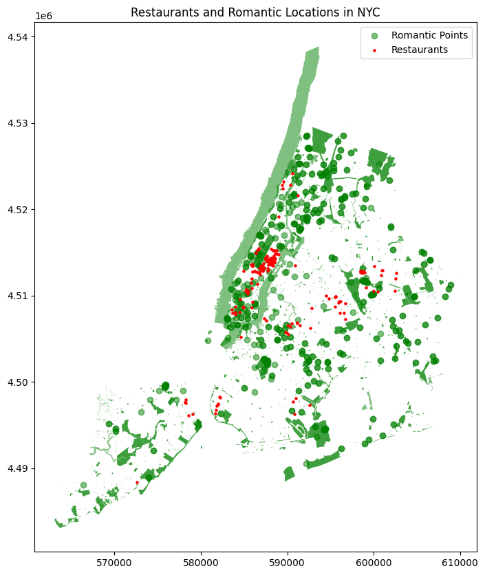

Collecting and Processing Environmental and Contextual Data for NYC Restaurants
This section focuses on gathering, cleaning, and processing relevant environmental and contextual factors that may influence restaurant performance and customer experience. By integrating data on public transportation, proximity to romantic locations, noise pollution, socioeconomic conditions, and pricing, we constructed a comprehensive dataset. These processed variables will serve as key inputs for further evaluation and analysis.
import geopandas as gpdreview = gpd.read_file("restaurants_reviews_final.geojson")info = gpd.read_file("restaurants_info.geojson")
The history saving thread hit an unexpected error (OperationalError('attempt to write a readonly database')).History will not be written to the database.
Parking availability can be a significant factor for customers driving to restaurants. We calculated the distance to the nearest parking lot for each restaurant, providing a realistic measure of parking convenience.
import osmnx as oximport geopandas as gpdimport pandas as pdimport numpy as npfrom scipy.spatial import cKDTreeimport matplotlib.pyplot as pltrestaurant_coords = np.array(list(zip(info_cleaned.geometry.x, info_cleaned.geometry.y)))parking_coords = np.array(list(zip(parking_lot_points.geometry.x, parking_lot_points.geometry.y)))tree = cKDTree(parking_coords)distances, indices = tree.query(restaurant_coords)info_cleaned['nearest_parking_distance'] = distancesinfo_cleaned.head()
title
price
categoryName
address
neighborhood
street
url
geometry
nearest_parking_distance
0
Phil-Am Kusina
$10–20
Filipino restaurant
556 Tompkins Ave., Staten Island, NY 10305
Rosebank
556 Tompkins Ave.
https://www.google.com/maps/search/?api=1&quer...
POINT (578550.560 4496152.507)
23.399102
1
H & L Bagels
$1–10
Bagel shop
8818 3rd Ave, Brooklyn, NY 11209
Fort Hamilton
8818 3rd Ave
https://www.google.com/maps/search/?api=1&quer...
POINT (581871.546 4497205.555)
131.466634
2
Coszcal De Allende
$30–50
Mexican restaurant
7506 3rd Ave, Brooklyn, NY 11209
Bay Ridge
7506 3rd Ave
https://www.google.com/maps/search/?api=1&quer...
POINT (582188.160 4498283.901)
128.852259
3
E.A.T.
$30–50
American restaurant
1064 Madison Ave, New York, NY 10028
Manhattan
1064 Madison Ave
https://www.google.com/maps/search/?api=1&quer...
POINT (587622.919 4514556.245)
550.739266
4
Dowling's at The Carlyle
$100+
Restaurant
35 E 76th St, New York, NY 10021
Manhattan
35 E 76th St
https://www.google.com/maps/search/?api=1&quer...
POINT (587497.885 4514233.353)
429.052337
02 Public Transportation Accessibility
To measure accessibility, we calculated the number of bus stops and subway stations within a 500-meter radius of each restaurant. A combined Public Transport Score was created to quantify the convenience of reaching these locations via public transit.
import osmnx as oximport geopandas as gpdimport pandas as pdimport numpy as npfrom shapely.ops import nearest_pointsimport matplotlib.pyplot as pltcity ="New York City, New York, USA"parks = ox.geometries_from_place(city, tags={'leisure': 'park'})waterfronts = ox.geometries_from_place(city, tags={'natural': 'water', 'leisure': 'park'})culture_areas = ox.geometries_from_place(city, tags={'tourism': 'museum'})sculpture_gardens = ox.geometries_from_place(city, tags={'leisure': 'garden'})points_of_interest = pd.concat([parks, waterfronts, culture_areas, sculpture_gardens])points_of_interest = points_of_interest[points_of_interest.geometry.notnull()]points_of_interest = points_of_interest.to_crs(epsg=32618)info_cleaned = info_cleaned.to_crs(epsg=32618)def nearest_distance(row, poi_gdf): nearest_geom = poi_gdf.geometry.apply(lambda geom: row.geometry.distance(geom))return nearest_geom.min()info_cleaned['nearest_romantic_distance'] = info_cleaned.apply(lambda row: nearest_distance(row, points_of_interest), axis=1)print(info_cleaned[['title', 'nearest_romantic_distance']].head())fig, ax = plt.subplots(figsize=(10, 10))points_of_interest.plot(ax=ax, color='green', alpha=0.5, label='Romantic Points')info_cleaned.plot(ax=ax, color='red', markersize=5, label='Restaurants')plt.title("Restaurants and Romantic Locations in NYC")plt.legend()plt.show()
/var/folders/7h/jtn8ncw16d59q490lkn0lqlh0000gn/T/ipykernel_94434/3253382405.py:12: FutureWarning: The `geometries` module and `geometries_from_X` functions have been renamed the `features` module and `features_from_X` functions. Use these instead. The `geometries` module and function names are deprecated and will be removed in the v2.0.0 release. See the OSMnx v2 migration guide: https://github.com/gboeing/osmnx/issues/1123
parks = ox.geometries_from_place(city, tags={'leisure': 'park'})
/var/folders/7h/jtn8ncw16d59q490lkn0lqlh0000gn/T/ipykernel_94434/3253382405.py:13: FutureWarning: The `geometries` module and `geometries_from_X` functions have been renamed the `features` module and `features_from_X` functions. Use these instead. The `geometries` module and function names are deprecated and will be removed in the v2.0.0 release. See the OSMnx v2 migration guide: https://github.com/gboeing/osmnx/issues/1123
waterfronts = ox.geometries_from_place(city, tags={'natural': 'water', 'leisure': 'park'})
/var/folders/7h/jtn8ncw16d59q490lkn0lqlh0000gn/T/ipykernel_94434/3253382405.py:14: FutureWarning: The `geometries` module and `geometries_from_X` functions have been renamed the `features` module and `features_from_X` functions. Use these instead. The `geometries` module and function names are deprecated and will be removed in the v2.0.0 release. See the OSMnx v2 migration guide: https://github.com/gboeing/osmnx/issues/1123
culture_areas = ox.geometries_from_place(city, tags={'tourism': 'museum'})
/var/folders/7h/jtn8ncw16d59q490lkn0lqlh0000gn/T/ipykernel_94434/3253382405.py:15: FutureWarning: The `geometries` module and `geometries_from_X` functions have been renamed the `features` module and `features_from_X` functions. Use these instead. The `geometries` module and function names are deprecated and will be removed in the v2.0.0 release. See the OSMnx v2 migration guide: https://github.com/gboeing/osmnx/issues/1123
sculpture_gardens = ox.geometries_from_place(city, tags={'leisure': 'garden'})
title nearest_romantic_distance
0 Phil-Am Kusina 284.550961
1 H & L Bagels 404.126647
2 Coszcal De Allende 290.370106
3 E.A.T. 145.836623
4 Dowling's at The Carlyle 126.697833
/var/folders/7h/jtn8ncw16d59q490lkn0lqlh0000gn/T/ipykernel_94434/3253382405.py:45: UserWarning: Legend does not support handles for PatchCollection instances.
See: https://matplotlib.org/stable/tutorials/intermediate/legend_guide.html#implementing-a-custom-legend-handler
plt.legend()

info_cleaned.head()
title
price
categoryName
address
neighborhood
street
url
geometry
nearest_parking_distance
bus_count_500m
subway_count_500m
public_transport_score
nearest_romantic_distance
0
Phil-Am Kusina
$10–20
Filipino restaurant
556 Tompkins Ave., Staten Island, NY 10305
Rosebank
556 Tompkins Ave.
https://www.google.com/maps/search/?api=1&quer...
POINT (578550.560 4496152.507)
23.399102
1
0
1
284.550961
1
H & L Bagels
$1–10
Bagel shop
8818 3rd Ave, Brooklyn, NY 11209
Fort Hamilton
8818 3rd Ave
https://www.google.com/maps/search/?api=1&quer...
POINT (581871.546 4497205.555)
131.466634
3
1
6
404.126647
2
Coszcal De Allende
$30–50
Mexican restaurant
7506 3rd Ave, Brooklyn, NY 11209
Bay Ridge
7506 3rd Ave
https://www.google.com/maps/search/?api=1&quer...
POINT (582188.160 4498283.901)
128.852259
5
1
8
290.370106
3
E.A.T.
$30–50
American restaurant
1064 Madison Ave, New York, NY 10028
Manhattan
1064 Madison Ave
https://www.google.com/maps/search/?api=1&quer...
POINT (587622.919 4514556.245)
550.739266
2
1
5
145.836623
4
Dowling's at The Carlyle
$100+
Restaurant
35 E 76th St, New York, NY 10021
Manhattan
35 E 76th St
https://www.google.com/maps/search/?api=1&quer...
POINT (587497.885 4514233.353)
429.052337
6
1
9
126.697833
Import Noises Complaints Data
import pandas as pdimport geopandas as gpdimport osmnx as oxfrom shapely.geometry import Pointimport matplotlib.pyplot as pltnoise_file ='311_Noise_Complaints.csv'df = pd.read_csv(noise_file)df = df.dropna(subset=['Latitude', 'Longitude'])geometry = [Point(xy) for xy inzip(df['Longitude'], df['Latitude'])]noise_gdf = gpd.GeoDataFrame(df, geometry=geometry, crs='EPSG:4326')noise_gdf.head()
/var/folders/7h/jtn8ncw16d59q490lkn0lqlh0000gn/T/ipykernel_94434/1095868831.py:8: DtypeWarning: Columns (29) have mixed types. Specify dtype option on import or set low_memory=False.
df = pd.read_csv(noise_file)
Unique Key
Created Date
Closed Date
Agency
Agency Name
Complaint Type
Descriptor
Location Type
Incident Zip
Incident Address
...
Taxi Company Borough
Taxi Pick Up Location
Bridge Highway Name
Bridge Highway Direction
Road Ramp
Bridge Highway Segment
Latitude
Longitude
Location
geometry
0
56416252
01/01/2023 12:00:42 AM
01/01/2023 05:34:15 PM
NYPD
New York City Police Department
Noise - Residential
Loud Music/Party
Residential Building/House
10453.0
1871 SEDGWICK AVENUE
...
NaN
NaN
NaN
NaN
NaN
NaN
40.853848
-73.917709
(40.85384789145288, -73.91770920479841)
POINT (-73.91771 40.85385)
1
56418136
01/01/2023 12:00:46 AM
01/01/2023 01:01:43 AM
NYPD
New York City Police Department
Noise - Residential
Loud Music/Party
Residential Building/House
11234.0
1621 EAST 51 STREET
...
NaN
NaN
NaN
NaN
NaN
NaN
40.620665
-73.926040
(40.62066491675458, -73.92604033064251)
POINT (-73.92604 40.62066)
2
56418977
01/01/2023 12:01:38 AM
01/01/2023 03:24:32 AM
NYPD
New York City Police Department
Noise - Residential
Loud Music/Party
Residential Building/House
11429.0
206-20 104 AVENUE
...
NaN
NaN
NaN
NaN
NaN
NaN
40.710379
-73.752158
(40.71037925060261, -73.75215815961971)
POINT (-73.75216 40.71038)
3
56413435
01/01/2023 12:01:54 AM
01/01/2023 12:43:40 AM
NYPD
New York City Police Department
Noise - Street/Sidewalk
Loud Talking
Street/Sidewalk
11218.0
15 AVENUE
...
NaN
NaN
NaN
NaN
NaN
NaN
40.639686
-73.979909
(40.63968638126339, -73.97990859982983)
POINT (-73.97991 40.63969)
4
56412730
01/01/2023 12:01:57 AM
01/01/2023 12:49:42 AM
NYPD
New York City Police Department
Noise - Commercial
Loud Music/Party
Store/Commercial
11378.0
70-10 GRAND AVENUE
...
NaN
NaN
NaN
NaN
NaN
NaN
40.727633
-73.892487
(40.72763257870112, -73.89248674712505)
POINT (-73.89249 40.72763)
5 rows × 40 columns
import osmnx as oxplace_name ="New York City, New York, USA"streets = ox.graph_from_place(place_name, network_type='drive')street_gdf = ox.graph_to_gdfs(streets, nodes=False) street_gdf = street_gdf.to_crs(epsg=32618) street_gdf.head()